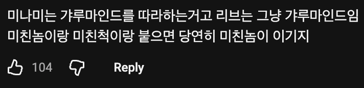
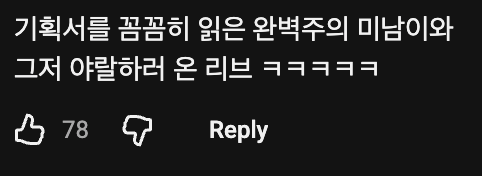
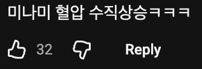
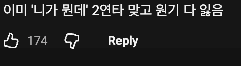

우이!
리브가 원이의 말을 따라했던 "갸루는 생산적인 일은 안 하나요?" 이건 마치 갸루들은 일은 안 하고 돈만 쓰며 놀기만 하는 거냐고 비꼬는 것처럼 들릴 수 있는데 나름의 배경이 있었음
당시 리센느의 소속사는 문체부의 지원을 힘들게 받아 프리티걸 뮤비를 찍었었고 촬영 때 입을 코디에 쓸 돈마저 회사에 없었다고함. 이런 상황에서 갸루 콘텐츠를 찍으면서 홍보를 위해 미나미에게 같이 춤을 추자고 했는데 미나미가 갸루는 춤을 추지 않는다며 계속 튕김. 원이는 갸루 코디에 비싼 돈만 쓰고 얻는게 없다며 빡침
그래서 차 안에서 미나미에게 갸루(미나미 니)는 생산적인 일은 안 하냐고 핀잔을 준 거임
참고
💃 갸루 미나미에게 ㄹㅇ 빡친 원이
https://www.dogdrip.net/705896354
이 때 원이가 찐화내서 뭐라고 했으면 기죽은 미나미로 다른세계관 입갤인가ㅋ
핀잔 핀잔 핀잔~

그녀석 ㅋㅋ
다른 예능 나갔을때도 '그 녀석'이 진행이나 흐름을 잘 만들긴 했지
이래서 경륜은 무시못하는거임
원이가 얼마나 극F였는지 간접 체험하는 극T 하프물범
리센느가 뜨기 시작하면서, 함께 시작된 수많은 억까들과
그 억까들에 아다리가 맞아서 빵빵 터져가는 상황을 보면..
정말 하늘이 돕고 있는 팀이라는 느낌이 들었어.
그런데 하늘은 아무나 돕는게 아니야.
'하늘은 스스로 돕는 자를 돕는거지'
결국 리센느는 뜰 수 밖에 없었던 팀이었던 것이라고 생각해.
왜이리 지피티 말투 같지
ㅋㅋ 그른가 ^^
gpt야 삼성전자 얼마에 팔까?
일단 갖고 계세요
7만원이요
론이랑 헤르미온느가 얘기하고있는거 같누ㅋ
저 세계관은 리센느 말고 다른 중소 걸그룹이 바이럴 되버림.
그사람 > 그녀석 ㅋㅋㅋ
1황 걸그룹
개인적으로 5명중 진행은 원이가 유튜브 짬바가 있어서 그런가 죤나 잘함ㅋㅋㅋ 특히나 마가 뜰때나 기획안에 없는 내용일때ㅋㅋㅋ
대본안읽고온 박명수라는 댓글있던데ㅋㅋㅋㅋㅋㅋㅋㅈㄴ웃김
ㅋㅋㅋㅋㅋㅋㅋㅋㅋㅋㅋㅋㅋㅋㅋㅋㅋㅋㅋㅋㅋ
그녀석이 진행을 참 잘 했어...